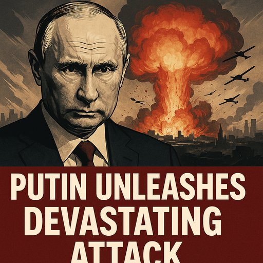

Quando os Drones Caem e as Máscaras Também: Crónica da Vergonha Ocidental
Publicado em 2025-07-04 15:49:40

Artigo de
Augustus Veritas
Na madrugada de um mundo cada vez mais cego,
mais de 500 drones russos e mísseis hipersónicos rasgaram os céus da Ucrânia, lançando destruição, medo e morte. Foi um dos maiores ataques desde o início da invasão. Mas o que mais estremece não é o número de projéteis — é o momento em que caíram:
horas depois de um telefonema entre Donald Trump e Vladimir Putin.
Sim, leu bem.
Enquanto
Trump gargalhava em privado com o tirano do Kremlin, a Ucrânia era bombardeada como nunca. Coincidência? Ingenuidade pensar que sim. O que se desenha é
um pacto tácito entre a omissão americana e a ambição imperial russa. Trump não é apenas passivo. Ele é cúmplice — pelo silêncio, pela retórica, pela sabotagem das alianças e pela destruição da credibilidade do Ocidente.
🕳️ Quando a América vira as costas, a tirania avança
Trump prepara-se para cortar o apoio à Ucrânia. Para ele, a liberdade é negociável. A segurança europeia, uma moeda de troca. E a guerra — um espetáculo útil para alimentar o medo, o nacionalismo e a indústria armamentista… americana, claro.
Enquanto isso,
Putin sente-se liberto, legitimado, entronizado. Ataca com Kinzhal e Iskander-M. Testa a nossa paciência. Ri-se do direito internacional. E avisa: “O próximo alvo pode ser qualquer um.”
🌍 A Europa em silêncio: a neutralidade da vergonha
A Europa, como sempre, hesita. Os líderes multiplicam conferências de imprensa, mas não escudos. Fazem promessas, mas não agem com a firmeza que a hora exige. Continuamos a escrever comunicados enquanto
a democracia sangra na linha da frente ucraniana.
Até quando?
Até Kiev cair?
Até Varsóvia tremer?
Até os drones sobrevoarem Bruxelas?
⚠️ O tempo acabou
Não é apenas a Ucrânia que está sob ataque.
É a ideia de que a liberdade pode resistir quando o medo governa.
É a crença de que o Ocidente ainda defende os seus.
É a esperança de que a História não se repita como farsa nuclear.
Hoje, Trump e Putin lançaram um aviso conjunto ao mundo.
Se a Europa continuar de joelhos, o próximo drone já não cairá em Kiev — cairá sobre a nossa dignidade.